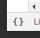

Chrome Dev Tools
tips and tricks
Created by Fernando Baroni (fernando@baroni.tech)
Available at https://baroni.tech/cdt
Harm Up - Console Tricks
(() => { const abc = 'hello'; const def = 'world';
console.clear();
// tip: encapsulate info in a object
console.log({ abc, def });
console.time(); console.groupCollapsed('My Group');
console.log('hello'); console.info('beautiful');
console.warn('world');
console.table([
{name: 'Fernando', position: 'absolute'},
{name: 'Yuna', position: 'relative'}
]);
console.groupEnd('My Group'); console.timeEnd();
console.error('ouch');
})();
Breakpoints
- Add breakpoint menu/line number
- debugger keyword
- Exception
- Dummy Conditional
- Conditional
- Conditional expression tricks
Add breakpoint menu
(() => {
debugger;
console.log('a');
console.info('b');
console.warn('c');
console.error('d');
})();
Press F12; While paused, try setting a breakpoint by clicking on it's line number.
debugger keyword
(() => {
const date = new Date();
if(date.getFullYear() >= 1992) {
if(date.getMonth() >= 9) {
if(date.getDate() <= 13) {
console.log(date.toISOString());
}
} else {
debugger;
}
}
})();
Press F12; The 'debugger' breakpoint pauses the execution when evaluated.
Exception
(() => {
let c = 1;
console.log('Something');
c++; // rocks
do_something_fun();
console.info('...useful');
})();
Enable the 'Exception' breakpoint by toggling

Conditionals
Breakpoints that allows to conditionally pause the code for certain conditions. It can be exploited to evaluate/modify expressions and code in real time. We can use it to add logging and even timing/profiling.
Conditional
(() => {
for(let i = 0; i < 8; i++) {
setTimeout(() => {
const v = Math.ceil(Math.abs((i * i) / (i - 5)));
const text = 'hello conditionals ' + v;
text.length < 22
? notifier.success(text)
: notifier.warning(text);
}, i * 1200);
}
})();
Dummy conditional
(() => {
for(let i = 0; i < 8; i++) {
setTimeout(() => {
const v = Math.ceil(Math.abs((i * i) / (i - 5)));
const text = 'hello conditionals ' + v;
if(text.length > 22) debugger; // I won!
text.length < 22
? notifier.success(text)
: notifier.warning(text);
}, i * 1200);
}
})();
Conditional
(() => {
for(let i = 0; i < 8; i++) {
setTimeout(() => {
const v = Math.ceil(Math.abs((i * i) / (i - 5)));
const text = 'hello conditionals ' + v;
text.length < 22
? notifier.success(text)
: notifier.warning(text);
}, i * 1200);
}
debugger; // Just to we break into the VM
})();
Cooler Conditional
(() => { debugger;
const scoreFormatter = cell => {
const r = cell.getRow().getData();
return r.base + r.project; }
const table = new Tabulator('#conditional-table', {
layout: 'fitColumns',
columns:[
{title: 'Name', field: 'name'},
{title: 'Base', field: 'base'},
{title: 'Project', field: 'project'},
{title: 'Score', field: 'score',
formatter: scoreFormatter}],
data: [
{name: 'Fernando', base: 4.2, project: 3.8},
{name: 'Yuna', base: 4.2, project: 4.8},
// Yuna - the most beautiful mage
{name: 'Tidus', base: '2.9', project: 2.2},
]
});
})();
Conditional 'logging'
(() => { debugger;
const saved = [];
for(let i = 0; i < 10; i++) {
const o = { i, e: i * 2 };
if (o.i < 5) {
saved.push(o);
}
}
})();
More breakpoints
- Lambdas
- XHR
- DOM
Lambda Breakpoints
Functional Programming Paradigm side effect: you have many lambdas, small functions, filters, mappers, accumulators... How to breakpoint that specific lambda?
Lambda Breakpoints
(() => {
debugger;
const d = [
{ name: 'Fernando', lastName: 'Baroni',
age: 26 },
{ name: 'Chocolate', lastName: 'Baroni',
age: 5 },
{ name: 'Chuck', lastName: 'Norris',
age: 79 },
];
console.log(d.filter(u => u.age > 10)
.map(u => u.name + ' ' + u.lastName)
.join(''));
})();
XHR Breakpoints
Useful to break when a service is 'fetched'.
XHR Breakpoints
(() => {
axios.get('/api/users');
axios.get('/api/users/fernando-baroni');
axios.post('/api/cart', {a: 1});
axios.delete('/api/data/2');
})();
DOM Breakpoints
DOM modifications, subtree and attributes tracking
DOM Breakpoints - Subtree
(() => {
const div = document.createElement('div');
const divs = document.getElementById('dom-breakpoints');
divs.appendChild(div);
})();
DOM Breakpoints - Node Removal
(() => {
const divs = document.getElementById('dom-breakpoints-2');
divs.removeChild(divs.children[0]);
})();
DOM Breakpoints - Attributes
(() => {
const div = document.getElementById('dom-breakpoints-3');
div.style.backgroundColor = randomColor();
})();
Performance, memory and audits
- Performance Profiler
- Memory Tracker
- Audits/Lighthouse
Performance Profiler
Analyze the code performance and time to complete operations
Performance Profiler
(() => {
const divs = document.getElementById('profiler-1');
while (divs.firstChild) divs.removeChild(divs.firstChild);
const w = 895; const h = 145;
for (let i = 0; i < 10000; i++) {
const div = document.createElement('div');
div.style.backgroundColor = randomColor();
div.style.left = Math.round(Math.random() * w) + 'px';
div.style.top = Math.round(Math.random() * h) + 'px';
divs.appendChild(div);
}
})();
Memory Tracker
Find memory leaks and analyze app memory usage
Visualize memory usage
(() => {
let s = '';
while (s.length < 1000000) s += 'hello world...';
if (!window.big_strings) window.big_strings = [];
window.big_string.push(s);
})();
Tracking memory leaks
(() => {
const mem = [];
for (let i = 0; i < 100; i++) {
mem.push({
i,
e: i * i,
f: i * i * i
});
}
if (!window.mem) window.mem = [];
window.mem.push(mem);
})();
Audits/Lighthouse
PWAs for the win
Other tricks
- Restarting frames
- Tooltip debugging
- Selector testing
- copy()
- Prettify code
Restarting Frames
On Call Stack, we can restart function contexts
(() => { debugger;
const a = n => {
const nn = n * n;
if (nn > 5) {
return b(n);
} else {
return c(n);
}
}
const b = console.info;
const c = console.warn;
a(10);
})();
Tooltip Debugging
Pause and manipulate tooltips DOM
(() => {
notifier.success('Hello World');
})();
Selector Testing
Edilio o/
CTRl-F in DOM to search using XPATH/CSS queries
copy()
Copy-C an object
(() => {
const o = ({ futurama: 'eh bom demais' });
debugger;
// copy(o)
})();
prettify code
Some more
- Blacklist scripts
- Console elements and last evaluated value
- Where my CSS was defined?
- Replay requests
- Copy requests as cURL
Blacklist Scripts
Stop stepping into framework code
(() => { debugger;
console.log('Step (F11) into and skip lodash code');
const odd = _.filter([1, 2, 3, 4, 5], n => n % 2 == 0);
console.log('Step (F11) into and skip lodash code');
})();
Console elements and last evaluated value
Pseudo variables
$_ previous evaluated value
$0 selected DOM element
Where my CSS was defined?
Find where my CSS was defined.
Replay requests
(() => {
axios.get('/api/users/fernando-baroni');
})();
Notice: Pre-Flight/CORS OPTIONS requests
Repeat the OPTIONS requests instead of the POST/PUT/DELETE
Copy as CURL
(() => {
axios.get('/api/users/fernando-baroni');
})();
Reproducible XHR requests - copy as CURL